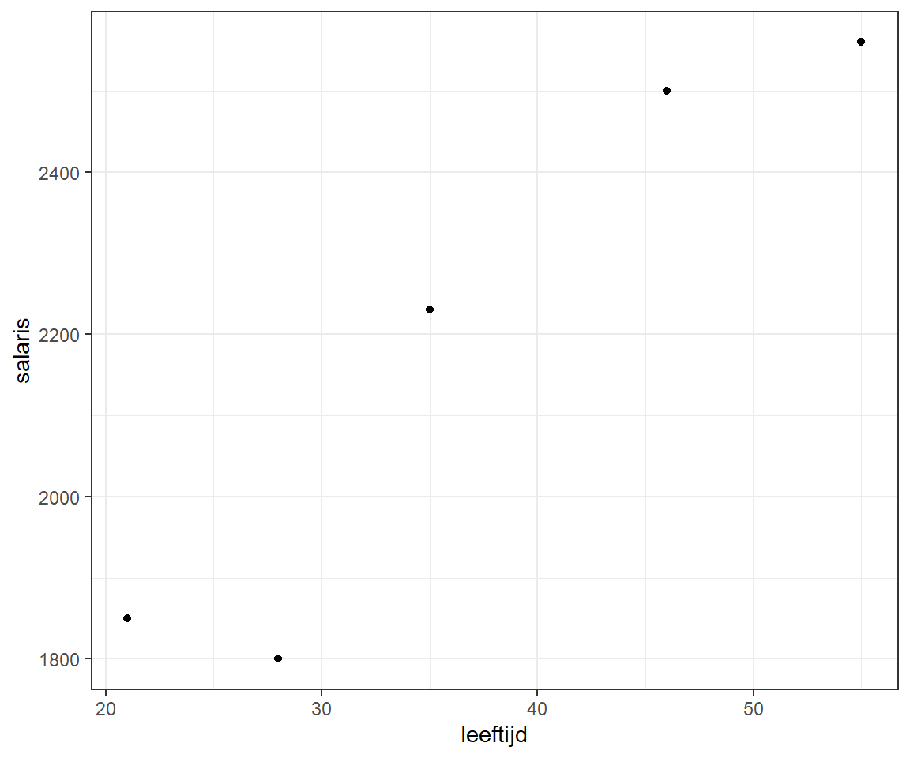
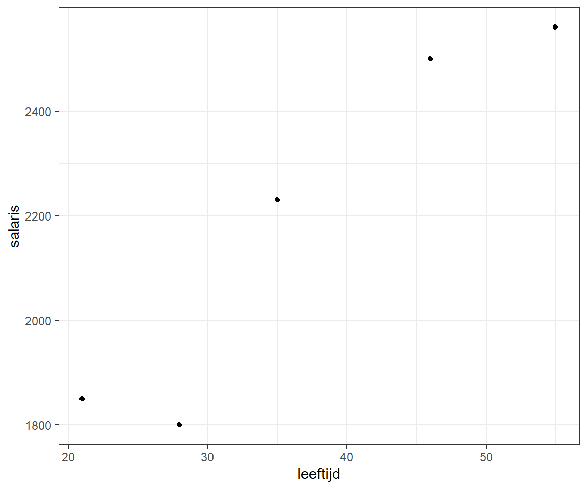
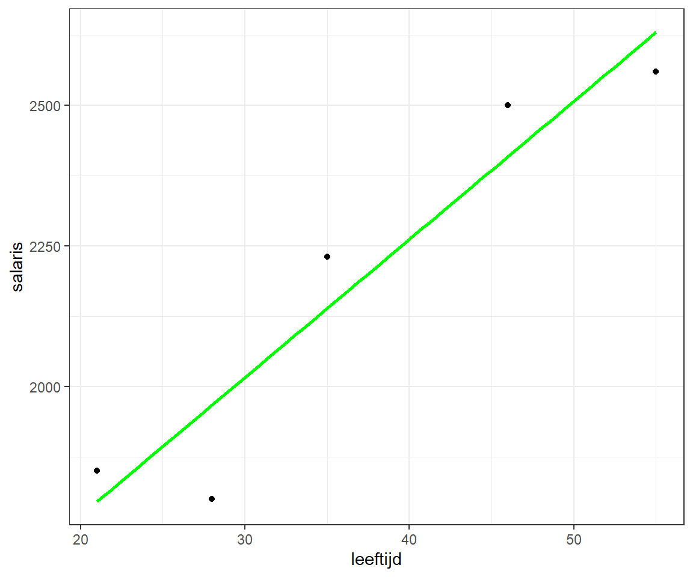
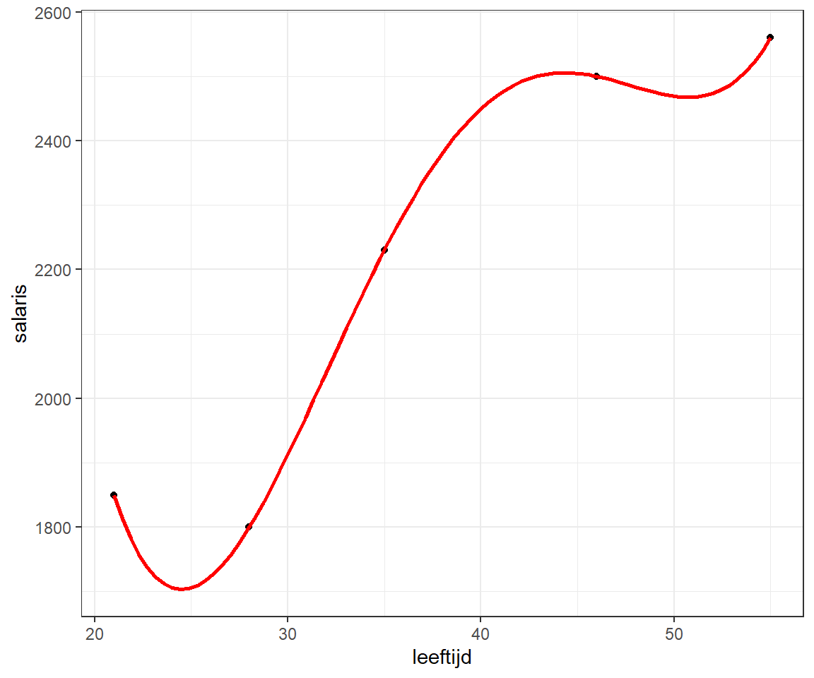
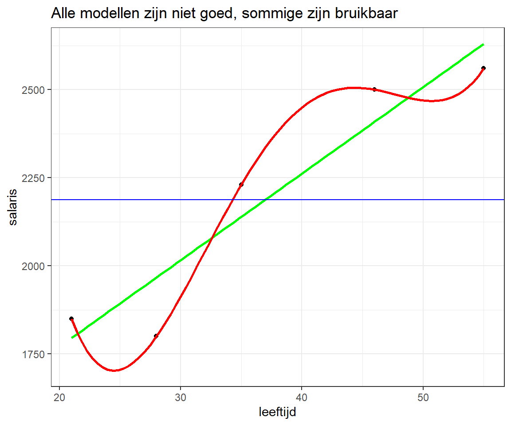

mijndata <- tibble(leeftijd = c(21, 46, 55, 35, 28),
salaris = c(1850, 2500, 2560, 2230, 1800))
p <- ggplot(mijndata, aes(x = leeftijd, y = salaris)) + geom_point()
p
Bron: Learning Data Science: Modelling Basics
Bij data science gaat het vaak om het maken van goede modellen. Bijvoorbeeld, kun je op basis van iemands leeftijd zijn maandsalaris voorspellen? Hierbij een voorbeeld met gefingeerde data. In dit model is leeftijd de onafhankelijke variabele en salaris de afhankelijke variabele.
Zie ook Excel bestand: leeftijd-inkomen.xlsx
mijndata <- tibble(leeftijd = c(21, 46, 55, 35, 28),
salaris = c(1850, 2500, 2560, 2230, 1800))
p <- ggplot(mijndata, aes(x = leeftijd, y = salaris)) + geom_point()
p
In de grafiek is een zekere lineaire afhankelijkheid waar te nemen. Met de functie cor kun je de correlatiecoefficient bepalen welke hier dicht bij 1 ligt.
cor(mijndata) leeftijd salaris
leeftijd 1.000 0.946
salaris 0.946 1.000regressielijn
Er wordt een lineair regressiemodel gemaakt
p + geom_smooth(method = "lm", se = FALSE, formula = y ~ x, col = "green")
Beoordeling model
model <- lm(salaris ~ leeftijd, data = mijndata)
summary(model)
Call:
lm(formula = salaris ~ leeftijd, data = mijndata)
Residuals:
1 2 3 4 5
54.9 91.0 -70.0 91.1 -167.0
Coefficients:
Estimate Std. Error t value Pr(>|t|)
(Intercept) 1279.37 188.51 6.79 0.0065 **
leeftijd 24.56 4.84 5.08 0.0148 *
---
Signif. codes: 0 '***' 0.001 '**' 0.01 '*' 0.05 '.' 0.1 ' ' 1
Residual standard error: 132 on 3 degrees of freedom
Multiple R-squared: 0.896, Adjusted R-squared: 0.861
F-statistic: 25.8 on 1 and 3 DF, p-value: 0.0148De vergelijking van de lijn is dus \(salaris = 1279.367 + 24.588 \times leeftijd\)
De p-waarden in de laatste kolom laten zien dat beide parameters significant zijn.
Voorspelling salaris van een 20-jarige wordt \(1279.367 + 24.588 \times 20 = 1770.52\). Dit kan ook in R met de functie predict(). Hierbij moet je de onafhankelijke variabele met zijn naam als data frame gebruiken, anders krijg je een foutmelding. En je kunt ook voor meerdere waarden tegelijk een voorspelling maken.
predict(model, data.frame(leeftijd = 20)) 1
1771 pred_model <- predict(model, data.frame(leeftijd = seq(0, 80, 5)))
names(pred_model) <- seq(0, 80, 5)
pred_model 0 5 10 15 20 25 30 35 40 45 50 55 60 65 70 75
1279 1402 1525 1648 1771 1893 2016 2139 2262 2384 2507 2630 2753 2876 2998 3121
80
3244 polynoom regressiemodel
Wat nu als je een model maakt dat nog nauwkeuriger is, een model waarbij de lijn daadwerkelijk alle gegevenspunten doorloopt, zodat alle beschikbare informatie wordt gebruikt. Dat kan met 4e-graads polynoom.
p + geom_smooth(method = "lm", se = FALSE,
formula = y ~ poly(x, 4), col = "red")
PolyReg <- lm(salaris ~ poly(leeftijd, 4, raw = TRUE), data = mijndata)
pred_PolyReg <- predict(PolyReg, data.frame(leeftijd = seq(0, 80, 5)))
names(pred_PolyReg) <- seq(0, 80, 5)
pred_PolyReg 0 5 10 15 20 25 30 35 40 45 50 55 60
19527 11104 5955 3164 1959 1706 1912 2230 2450 2505 2469 2560 3134
65 70 75 80
4690 7868 13451 22362 Is dit een beter model?
De lijn vertoont een raar verloop. Zo kun je geen goede reden bedenken waarom het salaris zou stijgen naarmate je jonger of ouder bent, evenals waarom tussen 21 en 28 jaar en tussen 46 en 55 jaar een buil is. Dit wordt veroorzaakt doordat het model de ruis in de data als goede invoer gebruikt. Het model wordt daardoor eigenlijk slechter!
Om een goed model te hebben, heb je altijd wat rigiditeit nodig om de gegevens te generaliseren. Dit voorbeeld illustreert een van de grote problemen van machine learning: overfitting van de gegevens. Overfitting betekent dat het model niet alleen past bij de systematische gegevens, maar ook bij de ruis. Een model met overfitting zal daarom waarschijnlijk slecht presteren bij nieuwe gegevens.
Het andere uiterste is onderfitting. Dit kan gedemonstreerd worden door het gemiddelde van salaris te gebruiken als model. Hierbij krijgt iedereen een salaris van 2188 en is met de blauwe lijn aangegeven.
p +
geom_smooth(method = "lm", se = FALSE, formula = y ~ x, col = "green") +
geom_smooth(method = "lm", se = FALSE, formula = y ~ poly(x, 4), col = "red") +
geom_hline(yintercept = mean(mijndata$salaris), col = "blue") +
ggtitle("Alle modellen zijn niet goed, sommige zijn bruikbaar")
Een ander belangrijk punt is dat alle modellen hun toepassingsgebied hebben. In dit geval waren er geen gegevens voor mensen van zeer jonge of zeer hoge leeftijd, dus het is over het algemeen erg gevaarlijk om voorspellingen te doen voor die mensen, dat wil zeggen voor waarden buiten het oorspronkelijke observatiebereik (ook wel extrapolatie genoemd - in tegenstelling tot interpolatie = voorspellingen binnen het oorspronkelijke bereik). Het lineaire model geeft in dit voorbeeld zelfs een salaris van 1279.367 aan een pas geborene! En dat het salaris steeds maar toeneemt naarmate de mensen ouder wordt slaat ook nergens op.